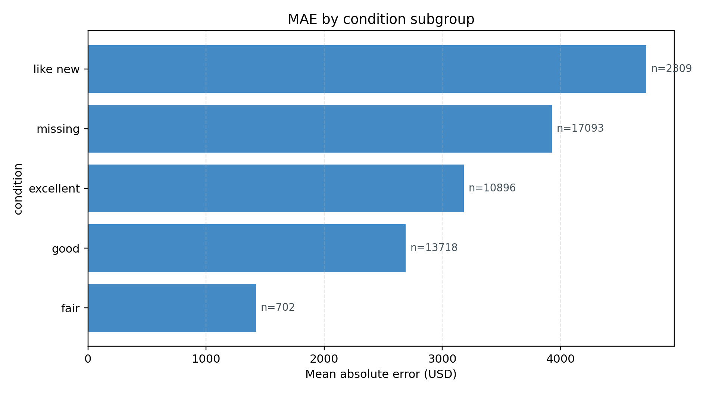
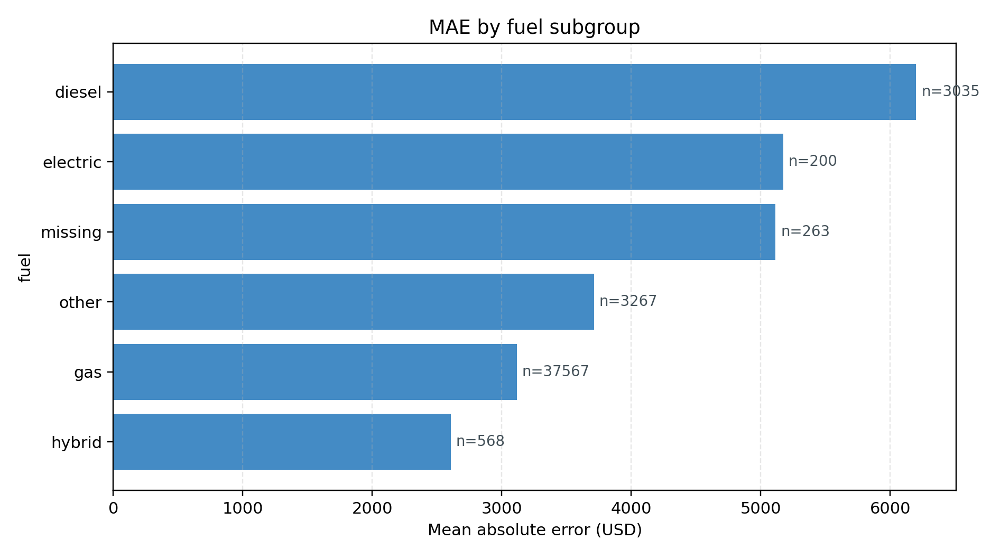
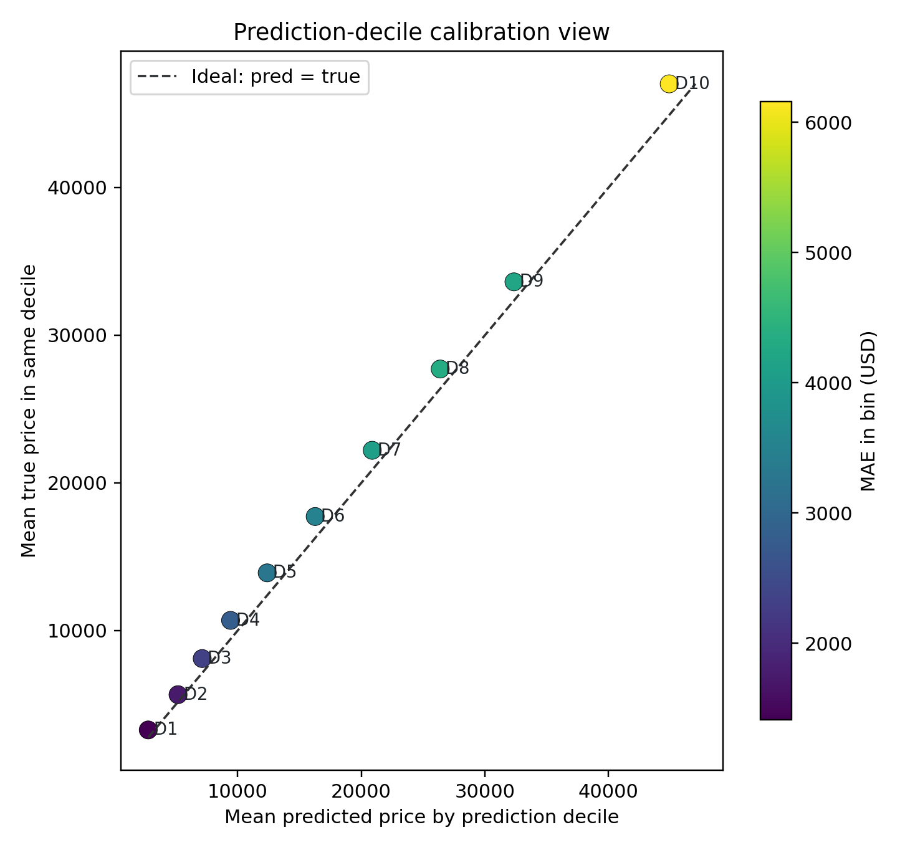
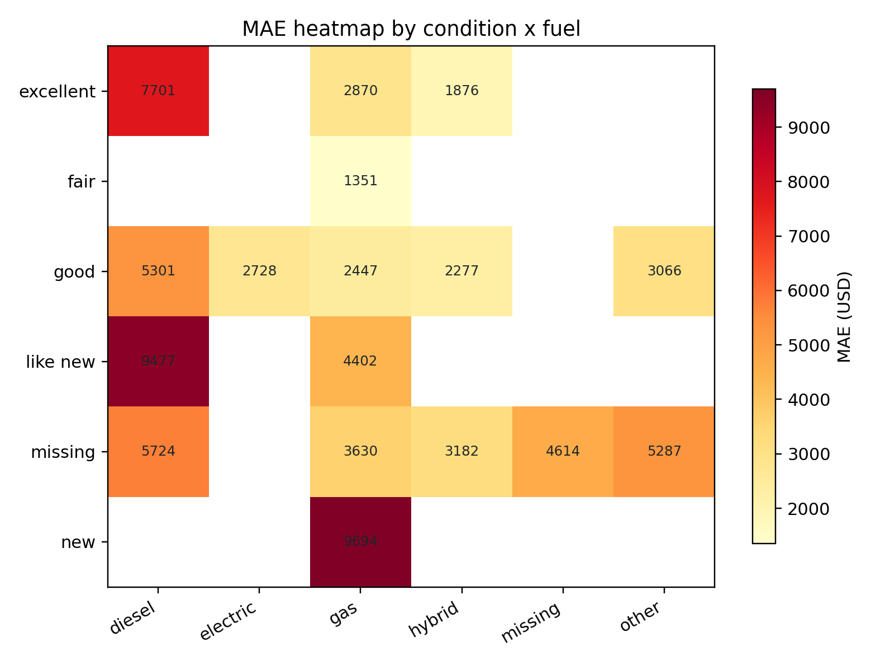
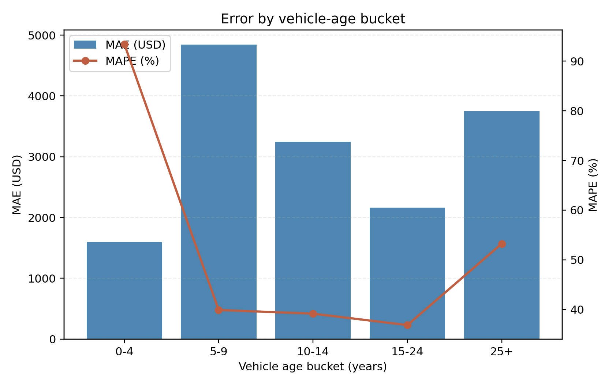

What stays true
The broad-domain best model remains `hgb_ordinal`. The extension does not change this ranking.
The new diagnostics strengthen interpretation by showing where the model is reliable and where uncertainty is larger.
Diagnostics and Interpretation
This page summarizes why the best broad-domain model is useful, where it still struggles, and how advanced extension diagnostics improve deployment interpretation.
| Tag | Model | R² | RMSE | MAE |
|---|---|---|---|---|
| hgb_ordinal | HistGradientBoosting | 0.8061 | 6649.38 | 3383.88 |
| ridge_text_a20 | Ridge + TF-IDF | 0.7275 | 7865.90 | 4416.09 |
| ridge | Ridge | 0.5835 | 9665.96 | 5684.14 |
| ols | OLS | 0.5834 | 9667.80 | 5689.79 |
| lasso | Lasso | 0.5540 | 10002.64 | 5973.56 |
Core Model Behavior


Advanced Figure Set






Interpretation
The broad-domain best model remains `hgb_ordinal`. The extension does not change this ranking.
The new diagnostics strengthen interpretation by showing where the model is reliable and where uncertainty is larger.
Reporting only R²/RMSE is no longer enough. Segment-aware dashboards (condition, fuel, age, and price deciles) should accompany predictions in a user-facing deployment.
This is especially relevant for high-price listings where absolute-dollar error naturally scales up.